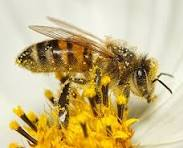
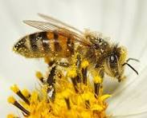

BEE KEEPING ASSOCIACTION.
By;Newton M. Mwenda 😁
What Is A Bee??
 



- Bees are winged insects closely related to wasps and ants, known for their roles in pollination and, in the case of the best-known bee species, the western honey bee, for producing honey.
- Bees are a monophyletic lineage within the superfamily Apoidea. They are currently considered a clade, called Anthophila.
- There are over 20,000 known species of bees in seven recognized biological families.[2][3][4] Some species – including honey bees, bumblebees, and stingless bees – live socially in colonies while most species (>90%) – including mason bees, carpenter bees, leafcutter bees, and sweat bees – are solitary.
- Bees are found on every continent except Antarctica, in every habitat on the planet that contains insect-pollinated flowering plants.
- The most common bees in the Northern Hemisphere are the Halictidae, or sweat bees, but they are small and often mistaken for wasps or flies.
- Bees range in size from tiny stingless bee species, whose workers are less than 2 millimetres (0.08 in) long,[5] to Megachile pluto, the largest species of leafcutter bee, whose females can attain a length of 39 millimetres (1.54 in).
- Bees feed on nectar and pollen, the former primarily as an energy source and the latter primarily for protein and other nutrients.
- Most pollen is used as food for their larvae. Vertebrate predators of bees include primates and birds such as bee-eaters; insect predators include beewolves and dragonflies.

- Bee pollination is important both ecologically and commercially, and the decline in wild bees has increased the value of pollination by commercially managed hives of honey bees.
- The analysis of 353 wild bee and hoverfly species across Britain from 1980 to 2013 found the insects have been lost from a quarter of the places they inhabited in 1980.
Evolution
- The immediate ancestors of bees were stinging wasps in the family Crabronidae, which were predators of other insects.
- The switch from insect prey to pollen may have resulted from the consumption of prey insects which were flower visitors and were partially covered with pollen when they were fed to the wasp larvae.
- This same evolutionary scenario may have occurred within the vespoid wasps, where the pollen wasps evolved from predatory ancestors.

- Based on phylogenetic analysis, bees are thought to have originated during the Early Cretaceous (about 124 million years ago) on the supercontinent of West Gondwana, just prior to its breakup into South America and Africa.
- The supercontinent is thought to have been a largely xeric environment at this time; modern bee diversity hotspots are also in xeric and seasonal temperate environments, suggesting strong niche conservatism among bees ever since their origins.
- Genomic analysis indicates that despite only appearing much later in the fossil record, all modern bee families had already diverged from one another by the end of the Cretaceous.

- The Melittidae, Apidae, and Megachilidae had already evolved on the supercontinent prior to its fragmentation.
- Further divergences were facilitated by West Gondwana's breakup around 100 million years ago, leading to a deep Africa-South America split within both the Apidae and Megachilidae
the isolation of the Melittidae in Africa, and the origins of the Colletidae, Andrenidae and Halictidae in South America. The rapid radiation of the South American bee families is thought to have
followed the concurrent radiation of flowering plants in the same region. Later in the Cretaceous (80 million years ago), colletid bees colonized Australia from South America (with an offshoot lineage evolving into the Stenotritidae), and by the end of the Cretaceous, South American bees had also colonized North America. - The North American fossil taxon Cretotrigona belongs to a group that is no longer found in North America, suggesting that
many bee lineages went extinct during the Cretace .